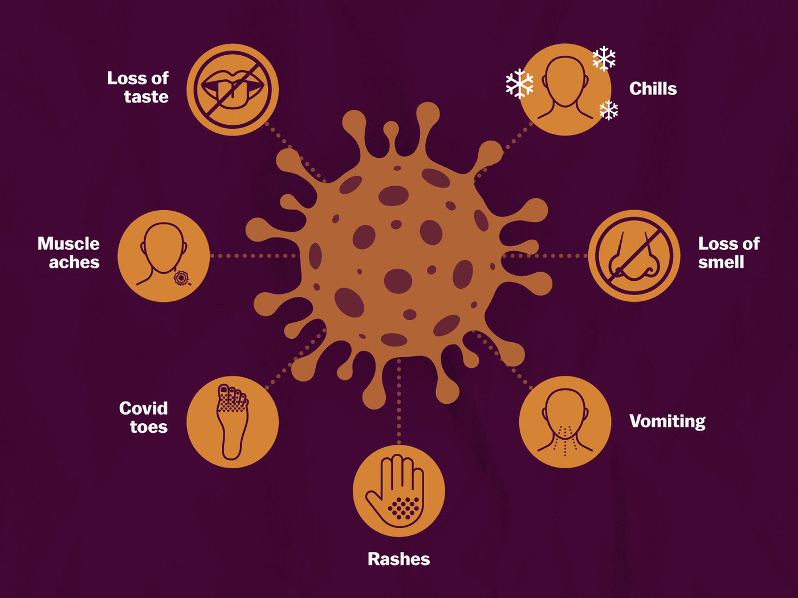
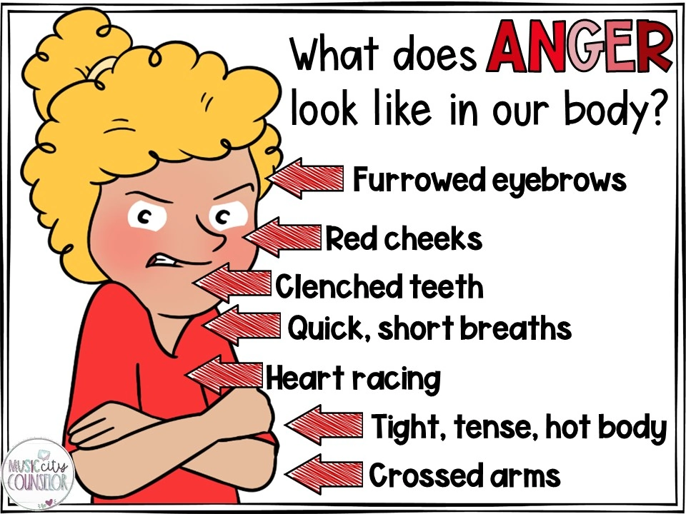
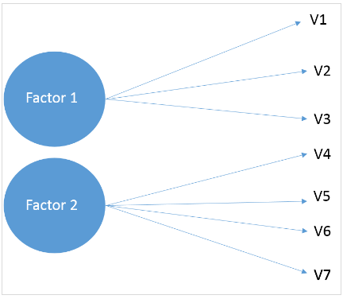
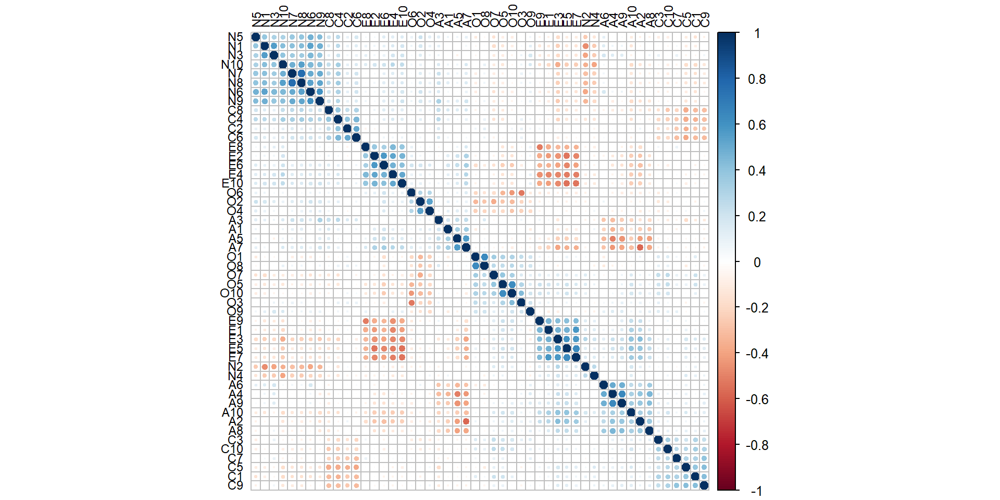
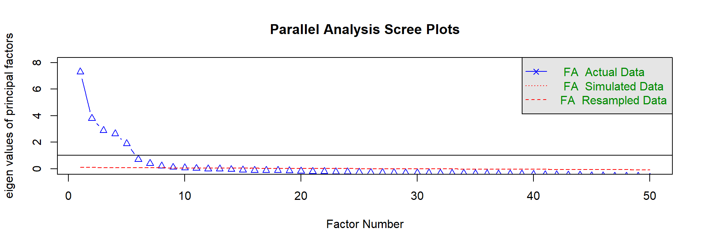
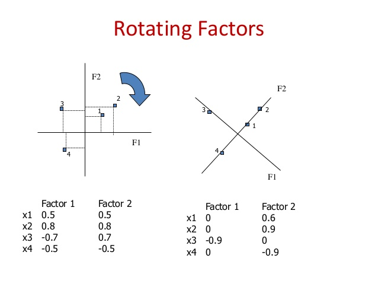
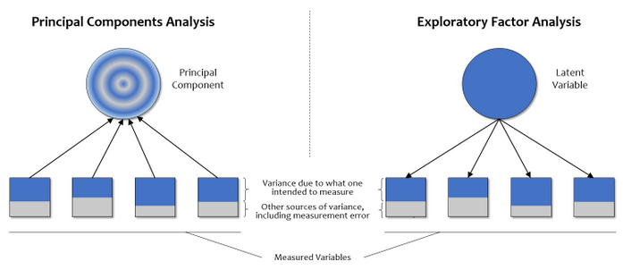
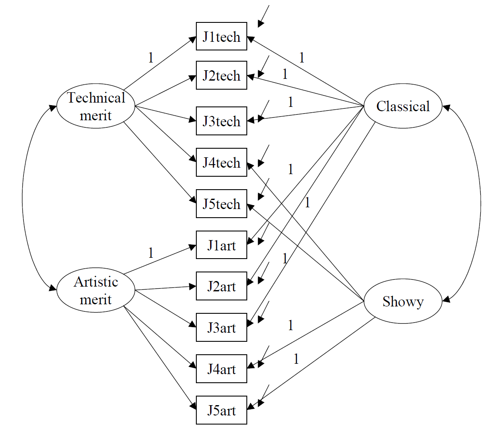
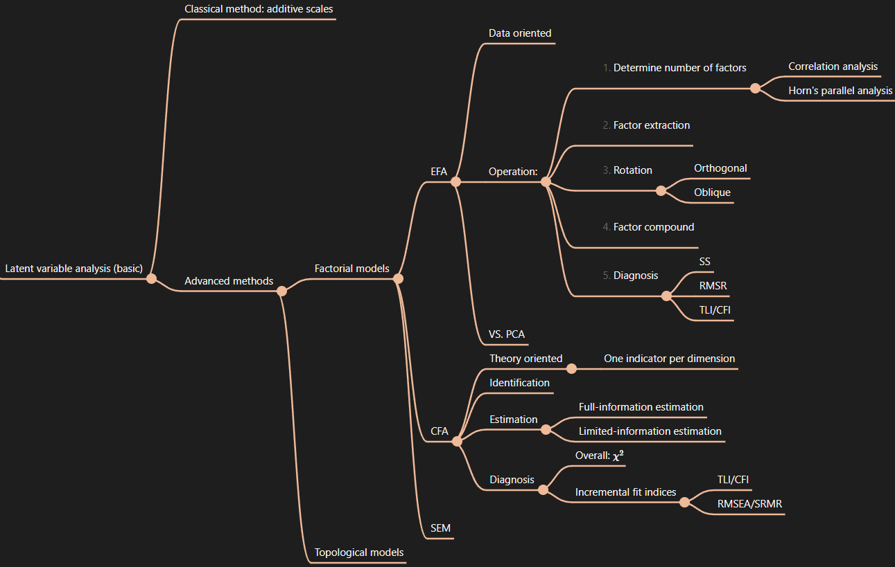

Latent Variable Analysis (Basic)
Large N & Leeuwenhoek (70700173)
Tsinghua University


Latent variable analysis is the cornerstone of successful scientific inquiry.— Delli Carpini and Keeter (1993)
Characteristics of Social Science Concepts
Difficulty to study LV
E.g., “Social capital”
Indicators:
Additive scales
\[\tilde{X} = (X_1 + X_2 + X_3)/3.\]
Concerns:
Advanced methods
Factorial models
Topological models
Indicators ← latent variable
In Theory
Minimum factors for the variances
In Operation

\[\boldsymbol{X^*} = \boldsymbol{\Phi\Lambda'} + \boldsymbol{\delta}.\]
Operation
Example: “Big Five” Test
Toy data:
19,719 subjects
Method 1: Correlation analysis


Loadings:
MR1 MR2 MR3 MR5 MR4
E1 0.691
E2 -0.695
E3 0.632
E4 -0.720
E5 0.723
E6 -0.544
E7 0.738
E8 -0.596
E9 0.639
E10 -0.652
N1 0.689
N2 -0.503
N3 0.614
N4 -0.297
N5 0.534
N6 0.747
N7 0.709
N8 0.741
N9 0.729
N10 0.579
A1 -0.438
A2 0.501
A3 -0.407
A4 0.800
A5 -0.658
A6 0.607
A7 -0.602
A8 0.575
A9 0.696
A10 0.335
C1 0.600
C2 -0.538
C3 0.401
C4 -0.532
C5 0.632
C6 -0.587
C7 0.557
C8 -0.451
C9 0.642
C10 0.471
O1 0.600
O2 -0.555
O3 0.531
O4 -0.474
O5 0.581
O6 -0.491
O7 0.489
O8 0.565
O9 0.350
O10 0.661
MR1 MR2 MR3 MR5 MR4
SS loadings 4.891 4.416 3.617 3.183 3.155
Proportion Var 0.098 0.088 0.072 0.064 0.063
Cumulative Var 0.098 0.186 0.258 0.322 0.385Similar outcome, different logic
(attention to the arrow directions!)
When to use which
E.g., interpersonal trust
Definition: Believe others not hurting you or breaking the commitments
Indicator:

\[\text{EFA: }\boldsymbol{X^*} = \boldsymbol{\Phi\Lambda'} + \boldsymbol{\delta}.\] \[\text{CFA: }\boldsymbol{X} = \boldsymbol{\Lambda_X\phi^*} + \boldsymbol{\delta}.\]
X： Indicator vector
φ：Latent variable
ΛX: X = f(ξ) coefficient(a.k.a., loading)
δ：Error
Φ: Latent variable covariate matrix
Θσ: Error covariate matrix
\[\begin{bmatrix} x_1\\ x_2\\ x_3\\ x_4\\ x_5 \end{bmatrix} = \begin{bmatrix} 1 & 1 & 0\\ \lambda_{21} & 1 & 0\\ \lambda_{31} & 1 & 0\\ \lambda_{41} & 0 & 1\\ \lambda_{51} & 0 & 1 \end{bmatrix} \begin{bmatrix}\xi_1\\ \xi_2\\ \xi_3 \end{bmatrix} + \begin{bmatrix}\delta_1\\ \delta_2\\ \delta_3\\ \delta_4\\ \delta_5 \end{bmatrix}\]
Latent variable matrix
\[\Phi = \begin{bmatrix} \phi_{11} & & \\ 0 & \phi_{22} & \\ 0 & \phi_{23} & \phi_{33} \end{bmatrix}\]
Error matrix
diag Θσ = diag[var(δ1) var(δ2)…var(δ5)]
Identified: Λ、Φ、Θ have only solution
Λ: \(X = f(\phi)\) coefficient (a.k.a., loading)
Φ: Latent variable covariate matrix
Θ Error covariate matrix
t rule: t < q(q + 1)/2
To guarantee identifable ⇒ restricted CFA
\[\sum(\theta) = \Lambda_X\Phi\Lambda'_X + \Theta_{\delta}\]
Σ: Observed indicator covariate matrix
Full-information estimation:
Maximum likelihood:
Generalized Least Squares
Unweighted Least Squares
Limited-information estimation:
Two Stage Least Squares
Overall: χ2
Incremental Fit Indices
Fitted model vs. basic model
Absolute Fit Indices
Special SEM
Nicknames
vs. CFA
Estimation
MLE
Diagnosis
Using SEM does not imply causality!
